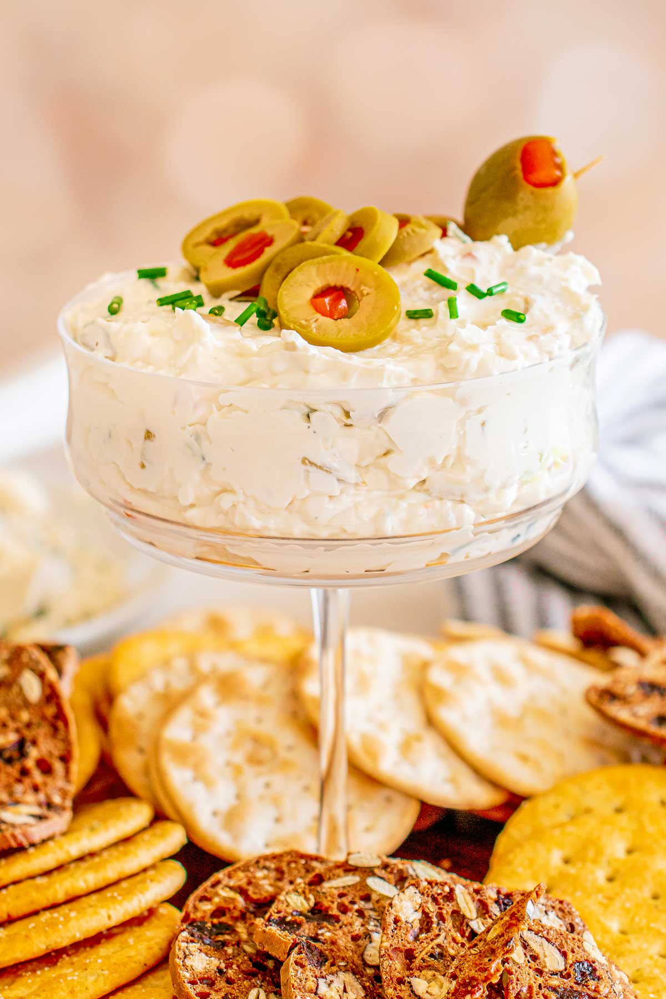

Dirty Martini Dip

Description
This dirty martini dip is briny, creamy, and rich, and perfect for a cocktail party.
Made with all the flavors of a dirty gin martini, including the blue cheese-stuffed olives,
it's salty with a tangy bite that keeps you wanting more.
Ingredients
- 1 1/2 tablespoons olive oil, divided
- 1 shallot, minced
- 2 fluid ounces gin, divided
- 8 ounces cream cheese, softened
- 8 ounces blue cheese, crumbled
- 1/2 cup sour cream
- 1 1/2 cups sliced green pimiento-stuffed olives, plus 3 tablespoons olive brine, divided
- 3/4 teaspoon kosher salt
- 3/4 teaspoon freshly ground black pepper, divided
Steps
- Heat oil in a small skillet over medium heat.
Add shallot and cook, stirring constantly, until softened, about 3 minutes.
Carefully pour 1 1/4 ounces gin into the skillet; remove skillet from heat.
- Add cream cheese, blue cheese, sour cream,
and shallot mixture to the bowl of a stand mixer fitted with a paddle attachment.
(Alternatively, add ingredients to a bowl and use a hand mixer).
Beat on medium-low until well combined.
Add 1 1/4 cup olives and 1 1/2 tablespoons brine to mixture and mix until just incorporated.
Stir in salt and pepper; transfer mixture to a serving bowl.
Cover and refrigerate for at least 1 hour.
- Meanwhile, make the olive topping. Combine remaining olives with remaining olive oil,
gin, brine, and black pepper in a small bowl. Stir well and let stand until ready to serve.
- Drain off some of the liquid, and spoon olive mixture onto dip. Serve with crackers or crostini.
Back to the main page